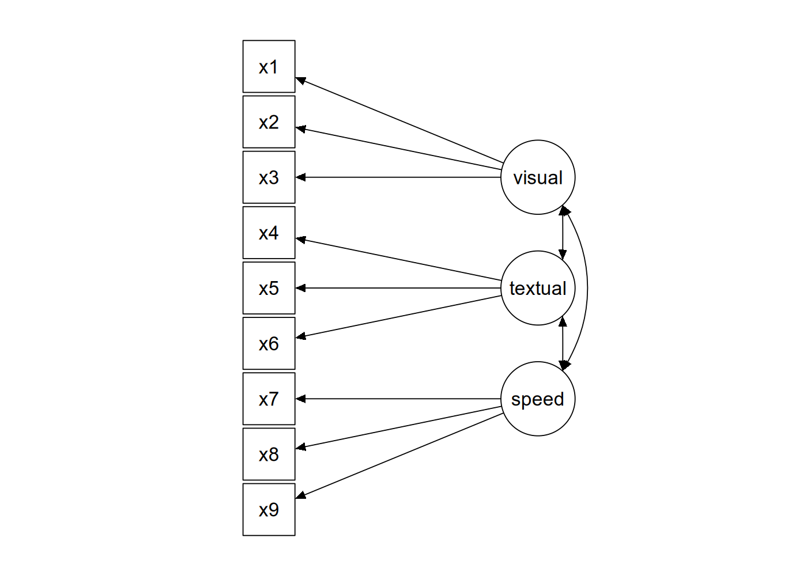

library("lavaan")
library("tidyverse") # for some minimal data wrangling9 Confirmatory factor analysis
This walkthrough will take a look at a famous dataset in SEM, namely the Holzinger & Swineford (1939) study of the cognitive ability of children in two schools. We will perform a Confirmatory Factor Analysis (CFA) on these data in R using lavaan. In developing these materials, I relied on two excellent sources: the CFA tutorial on the lavaan website as well as this video by Sasha Epskamp.
Let’s set up the environment and have a look.
?HolzingerSwineford1939HolzingerSwineford1939 package:lavaan R Documentation
Holzinger and Swineford Dataset (9 Variables)
Description:
The classic Holzinger and Swineford (1939) dataset consists of
mental ability test scores of seventh- and eighth-grade children
from two different schools (Pasteur and Grant-White). In the
original dataset (available in the ‘MBESS’ package), there are
scores for 26 tests. However, a smaller subset with 9 variables is
more widely used in the literature (for example in Joreskog's 1969
paper, which also uses the 145 subjects from the Grant-White
school only).
Usage:
data(HolzingerSwineford1939)
Format:
A data frame with 301 observations of 15 variables.
‘id’ Identifier
‘sex’ Gender
‘ageyr’ Age, year part
‘agemo’ Age, month part
‘school’ School (Pasteur or Grant-White)
‘grade’ Grade
‘x1’ Visual perception
‘x2’ Cubes
‘x3’ Lozenges
‘x4’ Paragraph comprehension
‘x5’ Sentence completion
‘x6’ Word meaning
‘x7’ Speeded addition
‘x8’ Speeded counting of dots
‘x9’ Speeded discrimination straight and curved capitals
Source:
This dataset was originally retrieved from
http://web.missouri.edu/~kolenikovs/stata/hs-cfa.dta (link no
longer active) and converted to an R dataset.
References:
Holzinger, K., and Swineford, F. (1939). A study in factor
analysis: The stability of a bifactor solution. Supplementary
Educational Monograph, no. 48. Chicago: University of Chicago
Press.
Joreskog, K. G. (1969). A general approach to confirmatory maximum
likelihood factor analysis. _Psychometrika_, 34, 183-202.The basic idea behind the dataset is that you have three indicators for each of three latent factors representing different cognitive abilities, as shown in Figure 9.1 below.

The data from the study is ‘built-in’ to the lavaan package, which means that after you’ve loaded lavaan using library("lavaan"), the dataset will be accessible as the named variable HolzingerSwineford1939.
HolzingerSwineford1939 |>
as_tibble() # convert from data.frame to tibble for printing# A tibble: 301 × 15
id sex ageyr agemo school grade x1 x2 x3 x4 x5 x6
<int> <int> <int> <int> <fct> <int> <dbl> <dbl> <dbl> <dbl> <dbl> <dbl>
1 1 1 13 1 Pasteur 7 3.33 7.75 0.375 2.33 5.75 1.29
2 2 2 13 7 Pasteur 7 5.33 5.25 2.12 1.67 3 1.29
3 3 2 13 1 Pasteur 7 4.5 5.25 1.88 1 1.75 0.429
4 4 1 13 2 Pasteur 7 5.33 7.75 3 2.67 4.5 2.43
5 5 2 12 2 Pasteur 7 4.83 4.75 0.875 2.67 4 2.57
6 6 2 14 1 Pasteur 7 5.33 5 2.25 1 3 0.857
7 7 1 12 1 Pasteur 7 2.83 6 1 3.33 6 2.86
8 8 2 12 2 Pasteur 7 5.67 6.25 1.88 3.67 4.25 1.29
9 9 2 13 0 Pasteur 7 4.5 5.75 1.5 2.67 5.75 2.71
10 11 2 12 5 Pasteur 7 3.5 5.25 0.75 2.67 5 2.57
# ℹ 291 more rows
# ℹ 3 more variables: x7 <dbl>, x8 <dbl>, x9 <dbl>When performing CFA in lavaan, we can either write everything out in full lavaan syntax and fit the model using lavaan(), or we can use the convenience function cfa() which has appropriate defaults. We will do the latter.
The first step is to define the syntax of the model. To perform CFA, we need to use a new syntactic operator in lavaan, =~, which is used to define your measurement model. When you see =~ you should read this as “… is measured by …”. This operator will appear in a formula such as lv =~ i1 + i2 + ... which means “latent variable lv is measured by indicators i1, i2, etc.
So, the model syntax to reproduce the diagram in Figure 9.1 would be as follows (with the syntax enclosed between single quotes, as is usual in lavaan).
mod_hs <- '
visual =~ x1 + x2 + x3
textual =~ x4 + x5 + x6
speed =~ x7 + x8 + x9
'That is really it, if we are using the function cfa(). Everything else in the model—the variances of the model indicators, the covariances among the latent factors—will be included in the model by default.
What’s left is just to run cfa().
fit_hs <- cfa(mod_hs, data = HolzingerSwineford1939)
fit_hs ## just printinglavaan 0.6-19 ended normally after 35 iterations
Estimator ML
Optimization method NLMINB
Number of model parameters 21
Number of observations 301
Model Test User Model:
Test statistic 85.306
Degrees of freedom 24
P-value (Chi-square) 0.000Here we can see that we estimated 21 parameters and thus has 24 degrees of freedom. It also reports back that the default estimation algorithm of Maximum Likelihood (ML) was used. The model has a \(\chi^2(24)=85.306\), with \(p<.001\), so the null hypothesis of perfect fit is rejected (as it often is with moderately large datasets).
Let’s get more information using summary(), including measures of fit.
summary(fit_hs, fit.measures = TRUE)lavaan 0.6-19 ended normally after 35 iterations
Estimator ML
Optimization method NLMINB
Number of model parameters 21
Number of observations 301
Model Test User Model:
Test statistic 85.306
Degrees of freedom 24
P-value (Chi-square) 0.000
Model Test Baseline Model:
Test statistic 918.852
Degrees of freedom 36
P-value 0.000
User Model versus Baseline Model:
Comparative Fit Index (CFI) 0.931
Tucker-Lewis Index (TLI) 0.896
Loglikelihood and Information Criteria:
Loglikelihood user model (H0) -3737.745
Loglikelihood unrestricted model (H1) -3695.092
Akaike (AIC) 7517.490
Bayesian (BIC) 7595.339
Sample-size adjusted Bayesian (SABIC) 7528.739
Root Mean Square Error of Approximation:
RMSEA 0.092
90 Percent confidence interval - lower 0.071
90 Percent confidence interval - upper 0.114
P-value H_0: RMSEA <= 0.050 0.001
P-value H_0: RMSEA >= 0.080 0.840
Standardized Root Mean Square Residual:
SRMR 0.065
Parameter Estimates:
Standard errors Standard
Information Expected
Information saturated (h1) model Structured
Latent Variables:
Estimate Std.Err z-value P(>|z|)
visual =~
x1 1.000
x2 0.554 0.100 5.554 0.000
x3 0.729 0.109 6.685 0.000
textual =~
x4 1.000
x5 1.113 0.065 17.014 0.000
x6 0.926 0.055 16.703 0.000
speed =~
x7 1.000
x8 1.180 0.165 7.152 0.000
x9 1.082 0.151 7.155 0.000
Covariances:
Estimate Std.Err z-value P(>|z|)
visual ~~
textual 0.408 0.074 5.552 0.000
speed 0.262 0.056 4.660 0.000
textual ~~
speed 0.173 0.049 3.518 0.000
Variances:
Estimate Std.Err z-value P(>|z|)
.x1 0.549 0.114 4.833 0.000
.x2 1.134 0.102 11.146 0.000
.x3 0.844 0.091 9.317 0.000
.x4 0.371 0.048 7.779 0.000
.x5 0.446 0.058 7.642 0.000
.x6 0.356 0.043 8.277 0.000
.x7 0.799 0.081 9.823 0.000
.x8 0.488 0.074 6.573 0.000
.x9 0.566 0.071 8.003 0.000
visual 0.809 0.145 5.564 0.000
textual 0.979 0.112 8.737 0.000
speed 0.384 0.086 4.451 0.000The fit indices don’t look spectacular, so perhaps we can look into ways to improve the model. The modificationIndices() function shows the \(\chi^2\) value associated with various possible modifications to the original fit.
modificationIndices(fit_hs) |>
arrange(desc(mi)) lhs op rhs mi epc sepc.lv sepc.all sepc.nox
1 visual =~ x9 36.411 0.577 0.519 0.515 0.515
2 x7 ~~ x8 34.145 0.536 0.536 0.859 0.859
3 visual =~ x7 18.631 -0.422 -0.380 -0.349 -0.349
4 x8 ~~ x9 14.946 -0.423 -0.423 -0.805 -0.805
5 textual =~ x3 9.151 -0.272 -0.269 -0.238 -0.238
6 x2 ~~ x7 8.918 -0.183 -0.183 -0.192 -0.192
7 textual =~ x1 8.903 0.350 0.347 0.297 0.297
8 x2 ~~ x3 8.532 0.218 0.218 0.223 0.223
9 x3 ~~ x5 7.858 -0.130 -0.130 -0.212 -0.212
10 visual =~ x5 7.441 -0.210 -0.189 -0.147 -0.147
11 x1 ~~ x9 7.335 0.138 0.138 0.247 0.247
12 x4 ~~ x6 6.220 -0.235 -0.235 -0.646 -0.646
13 x4 ~~ x7 5.920 0.098 0.098 0.180 0.180
14 x1 ~~ x7 5.420 -0.129 -0.129 -0.195 -0.195
15 x7 ~~ x9 5.183 -0.187 -0.187 -0.278 -0.278
16 textual =~ x9 4.796 0.138 0.137 0.136 0.136
17 visual =~ x8 4.295 -0.210 -0.189 -0.187 -0.187
18 x3 ~~ x9 4.126 0.102 0.102 0.147 0.147
19 x4 ~~ x8 3.805 -0.069 -0.069 -0.162 -0.162
20 x1 ~~ x2 3.606 -0.184 -0.184 -0.233 -0.233
21 x1 ~~ x4 3.554 0.078 0.078 0.173 0.173
22 textual =~ x8 3.359 -0.121 -0.120 -0.118 -0.118
23 visual =~ x6 2.843 0.111 0.100 0.092 0.092
24 x4 ~~ x5 2.534 0.186 0.186 0.457 0.457
25 x2 ~~ x9 1.895 0.075 0.075 0.094 0.094
26 x3 ~~ x6 1.855 0.055 0.055 0.100 0.100
27 speed =~ x2 1.580 -0.198 -0.123 -0.105 -0.105
28 x5 ~~ x7 1.233 -0.049 -0.049 -0.083 -0.083
29 visual =~ x4 1.211 0.077 0.069 0.059 0.059
30 x5 ~~ x9 0.999 0.040 0.040 0.079 0.079
31 x1 ~~ x3 0.935 -0.139 -0.139 -0.203 -0.203
32 x5 ~~ x6 0.916 0.101 0.101 0.253 0.253
33 x2 ~~ x6 0.785 0.039 0.039 0.062 0.062
34 speed =~ x3 0.716 0.136 0.084 0.075 0.075
35 x3 ~~ x7 0.638 -0.044 -0.044 -0.054 -0.054
36 x1 ~~ x8 0.634 -0.041 -0.041 -0.079 -0.079
37 x2 ~~ x4 0.534 -0.034 -0.034 -0.052 -0.052
38 x1 ~~ x5 0.522 -0.033 -0.033 -0.067 -0.067
39 x5 ~~ x8 0.347 0.023 0.023 0.049 0.049
40 x6 ~~ x8 0.275 0.018 0.018 0.043 0.043
41 speed =~ x6 0.273 0.044 0.027 0.025 0.025
42 x6 ~~ x7 0.259 -0.020 -0.020 -0.037 -0.037
43 speed =~ x5 0.201 -0.044 -0.027 -0.021 -0.021
44 x4 ~~ x9 0.196 -0.016 -0.016 -0.035 -0.035
45 x3 ~~ x4 0.142 -0.016 -0.016 -0.028 -0.028
46 textual =~ x7 0.098 -0.021 -0.021 -0.019 -0.019
47 x6 ~~ x9 0.097 -0.011 -0.011 -0.024 -0.024
48 x3 ~~ x8 0.059 -0.012 -0.012 -0.019 -0.019
49 x2 ~~ x8 0.054 -0.012 -0.012 -0.017 -0.017
50 x1 ~~ x6 0.048 0.009 0.009 0.020 0.020
51 x2 ~~ x5 0.023 -0.008 -0.008 -0.011 -0.011
52 textual =~ x2 0.017 -0.011 -0.011 -0.010 -0.010
53 speed =~ x1 0.014 0.024 0.015 0.013 0.013
54 speed =~ x4 0.003 -0.005 -0.003 -0.003 -0.003These are some ways you could improve model fit, but here you want to be careful. Note that some cross-loadings are being suggested (e.g., visual =~ x9) but you might want to avoid these unless you have some theoretical reason for including them.
Maybe what we would want to do instead would be to improve the model by allowing a few covariances between indicator variables. So let’s restrict the set of possibilities to these.
modificationIndices(fit_hs) |>
filter(op == "~~") |> # the syntactic symbol for covariances
arrange(desc(mi)) |> # order them in terms of the modification index
slice(1:15) lhs op rhs mi epc sepc.lv sepc.all sepc.nox
1 x7 ~~ x8 34.145 0.536 0.536 0.859 0.859
2 x8 ~~ x9 14.946 -0.423 -0.423 -0.805 -0.805
3 x2 ~~ x7 8.918 -0.183 -0.183 -0.192 -0.192
4 x2 ~~ x3 8.532 0.218 0.218 0.223 0.223
5 x3 ~~ x5 7.858 -0.130 -0.130 -0.212 -0.212
6 x1 ~~ x9 7.335 0.138 0.138 0.247 0.247
7 x4 ~~ x6 6.220 -0.235 -0.235 -0.646 -0.646
8 x4 ~~ x7 5.920 0.098 0.098 0.180 0.180
9 x1 ~~ x7 5.420 -0.129 -0.129 -0.195 -0.195
10 x7 ~~ x9 5.183 -0.187 -0.187 -0.278 -0.278
11 x3 ~~ x9 4.126 0.102 0.102 0.147 0.147
12 x4 ~~ x8 3.805 -0.069 -0.069 -0.162 -0.162
13 x1 ~~ x2 3.606 -0.184 -0.184 -0.233 -0.233
14 x1 ~~ x4 3.554 0.078 0.078 0.173 0.173
15 x4 ~~ x5 2.534 0.186 0.186 0.457 0.457These are the top candidates for improving our model. First of these is to allow x7 to covary with x8. Let’s do that and check the improvement to the fit.
mod_hs2 <- '
visual =~ x1 + x2 + x3
textual =~ x4 + x5 + x6
speed =~ x7 + x8 + x9
## included to improve model fit
x7 ~~ x8
'
fit_hs2 <- cfa(mod_hs2, data = HolzingerSwineford1939)
summary(fit_hs2, fit.measures=TRUE)lavaan 0.6-19 ended normally after 43 iterations
Estimator ML
Optimization method NLMINB
Number of model parameters 22
Number of observations 301
Model Test User Model:
Test statistic 53.272
Degrees of freedom 23
P-value (Chi-square) 0.000
Model Test Baseline Model:
Test statistic 918.852
Degrees of freedom 36
P-value 0.000
User Model versus Baseline Model:
Comparative Fit Index (CFI) 0.966
Tucker-Lewis Index (TLI) 0.946
Loglikelihood and Information Criteria:
Loglikelihood user model (H0) -3721.728
Loglikelihood unrestricted model (H1) -3695.092
Akaike (AIC) 7487.457
Bayesian (BIC) 7569.013
Sample-size adjusted Bayesian (SABIC) 7499.242
Root Mean Square Error of Approximation:
RMSEA 0.066
90 Percent confidence interval - lower 0.043
90 Percent confidence interval - upper 0.090
P-value H_0: RMSEA <= 0.050 0.118
P-value H_0: RMSEA >= 0.080 0.175
Standardized Root Mean Square Residual:
SRMR 0.047
Parameter Estimates:
Standard errors Standard
Information Expected
Information saturated (h1) model Structured
Latent Variables:
Estimate Std.Err z-value P(>|z|)
visual =~
x1 1.000
x2 0.576 0.098 5.898 0.000
x3 0.752 0.103 7.289 0.000
textual =~
x4 1.000
x5 1.115 0.066 17.015 0.000
x6 0.926 0.056 16.682 0.000
speed =~
x7 1.000
x8 1.244 0.194 6.414 0.000
x9 2.515 0.641 3.924 0.000
Covariances:
Estimate Std.Err z-value P(>|z|)
.x7 ~~
.x8 0.353 0.067 5.239 0.000
visual ~~
textual 0.400 0.073 5.511 0.000
speed 0.184 0.054 3.423 0.001
textual ~~
speed 0.102 0.036 2.854 0.004
Variances:
Estimate Std.Err z-value P(>|z|)
.x1 0.576 0.101 5.678 0.000
.x2 1.122 0.100 11.171 0.000
.x3 0.832 0.087 9.552 0.000
.x4 0.372 0.048 7.791 0.000
.x5 0.444 0.058 7.600 0.000
.x6 0.357 0.043 8.287 0.000
.x7 1.036 0.090 11.501 0.000
.x8 0.795 0.080 9.988 0.000
.x9 0.088 0.188 0.466 0.641
visual 0.783 0.135 5.810 0.000
textual 0.978 0.112 8.729 0.000
speed 0.147 0.056 2.615 0.009You will probably want to compare models to see if the inclusion is justified.
anova(fit_hs2, fit_hs)
Chi-Squared Difference Test
Df AIC BIC Chisq Chisq diff RMSEA Df diff Pr(>Chisq)
fit_hs2 23 7487.5 7569.0 53.272
fit_hs 24 7517.5 7595.3 85.305 32.033 0.32109 1 1.516e-08 ***
---
Signif. codes: 0 '***' 0.001 '**' 0.01 '*' 0.05 '.' 0.1 ' ' 1You could (in principal) continue this process until you get a satisfactory model fit. But let’s put this aside and have a look at another useful thing you can do.
One thing you might want to know is: what are the correlations between these various latent factors? The output gives use covariances, which are hard to interpret, because the variances of the latent factors are not standardized. Rather than using unit loading identification (ULI), we can switch to unit variance identification (UVI); in other words, rather than having the first loading scaled to one, we allow the loading to vary but fix the variance of our latent factors to 1. We can do this by adding std.lv=TRUE option to our call to cfa().
fit_cfa2 <- cfa(mod_hs2, data = HolzingerSwineford1939,
std.lv = TRUE)Covariances:
Estimate Std.Err z-value P(>|z|)
.x7 ~~
.x8 0.353 0.067 5.239 0.000
visual ~~
textual 0.457 0.064 7.142 0.000
speed 0.544 0.078 6.965 0.000
textual ~~
speed 0.270 0.065 4.141 0.000Now that we have this information, we can interpret the covariance between latent factors as correlations. We obtain small to medium positive correlations between all three factors: so, a correlation of 0.457 between visual and textual; of 0.544 between visual and speed; and of 0.27 between textual and speed.